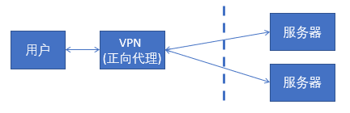
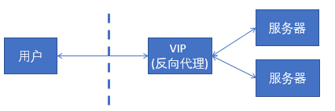
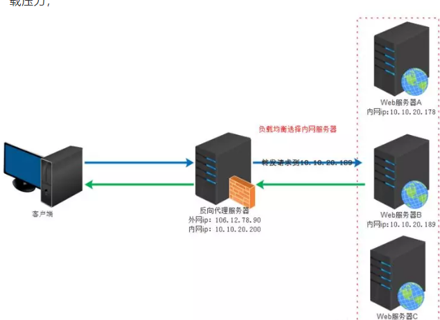

正向代理，是在客户端。比如需要访问某些国外网站，需要购买vpn，并且vpn是在我们的用户浏览器端设置的。浏览器先访问vpn地址，vpn地址转发请求，并最后将请求结果原路返回回来。

反向代理，是作用在服务端的，是一个虚拟ip。对于用户的一个请求，会转发到多个后端处理器中的一台来处理该数据请求。例如大型网站都有DNS（域名解析服务器），load balance（负载均衡）

作用：1.保护网站安全，任何来自Internet的请求都必须经过代理服务器。大型网站，通常将反向代理作为公网访问地址，web服务器是内网。
2.通过配置缓存功能加速Web请求，可以缓存真实Web服务器上的某些静态资源，减轻真实Web服务器的负载压力。
3.实现负载均衡：充当负载均衡器均衡地分发请求，平衡集群中各个服务器的负载压力。

用例：nginx作为软件能支持反向代理，也就是说nginx可以作为负载均衡器。（提高网站性能，支持更高并发请求）
下面是分界线~